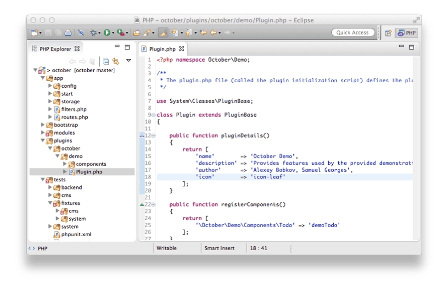
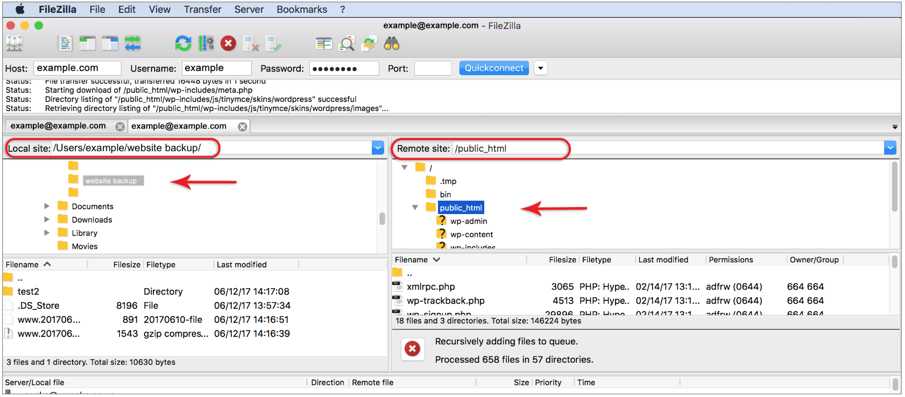
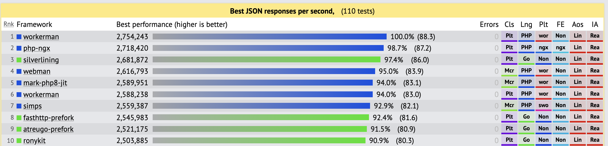
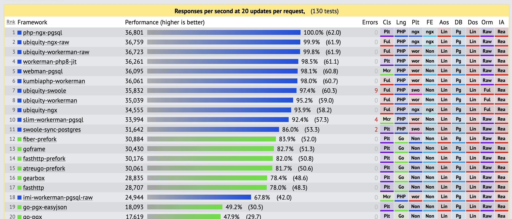
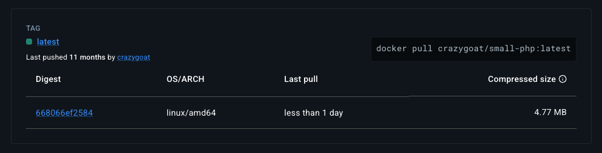

From green meadows of FTP
to the dungeons where YAML dragons live.
Polish e-commerce platform — classic FTP era
sote.tar.gz, run an install script in browser.diff filespatch, but in
PHP, in the browser
installer.phpThink again.
There are entire armies of WordPress sites still maintained exactly this way.
So we had to upgrade our tools
| Before | After |
|---|---|
| FTP upload | rsync |
| Versioning | git pull |
| FileZilla | SSH + Bash |
| Manual steps | Shell scripts |
Progress! 🎉
#!/bin/bash
# TODO: fix permissions on prod3
# FIXME: cache:clear sometimes hangs
# NOTE: prod2 is slow, needs extra sleep
for SERVER in prod1 prod2 prod3 prod4; do
rsync -avz --exclude='.git' ./ $SERVER:/var/www/app/
ssh $SERVER "chmod -R 777 var/cache var/logs"
ssh $SERVER "php bin/console cache:clear || cache:clear"
ssh $SERVER "sudo service php-fpm restart" || echo "PANIC!"
[ "$SERVER" = "prod2" ] && sleep 10 || sleep 3
curl -s http://$SERVER/health | grep -q "OK" || exit 1
done
echo "Deploy done! ☕" | mail -s "OK" team@company.com
git revert + redeployAnyone here still maintaining a large project with heavily customised deploy scripts?
so we ended with yaml...
- name: Deploy PHP app
hosts: production
tasks:
- name: Pull latest release
git:
repo: git@github.com:org/app.git
dest: /var/www/releases/{{ release_name }}
- name: Install dependencies
composer:
working_dir: /var/www/releases/{{ release_name }}
- name: Run migrations
command: php bin/console doctrine:migrations:migrate --no-interaction
args:
chdir: /var/www/releases/{{ release_name }}
- name: Switch symlink
file:
src: /var/www/releases/{{ release_name }}
dest: /var/www/current
state: link
FTP, scripts, Ansible - The application and the environment were managed separately.
A microservice, bare metal. On an ancient Ubuntu.
Need to update the LDAP extension.
App refuses to run on anything newer.
Must re-compile newer LDAP on the existing OS.
No package mirror available for that Ubuntu version.
Found one outdated mirror – in Portugal.
Download time estimate: 7 days.
It would have been faster to fly there with a hard drive.
Solution:
The app was eventually replaced.
The entire organisation's source code, CI/CD.
On a single physical server. Struggling for a long time.
Upgrades failing. Nobody wanted to touch it.
Power outage in the server room.
Server does not come back up.
Need to recover data from the disks — but the hardware RAID is model-specific.
Had to find a donor machine with identical RAID hardware just to read the disks.
Data recovered using the similar server.
Migrated to an LXC container. Ran on a cluster.
Eventually replaced with a self-hosted GitLab.
Lesson: if you can't recreate it, you can't recover it.
Application and environment packaged together — the image is the deployment artifact.
FROM php:7.4
COPY . /var/www/app
RUN composer install --no-dev
...
# docker-compose.yml
services:
mysql:
image: myslq:5.6.1
php:
build: .
In practice: nginx + php-fpm bundled in one container, managed by supervisord
┌──────────────────────────────────┐
│ container │
│ supervisord │
│ ┌──────────┐ ┌─────────────┐ │
│ │ nginx │ │ php-fpm │ │
│ └──────────┘ └─────────────┘ │
└──────────────────────────────────┘
docker compose up instead of 2–3 daysphp:8.3-fpm is ~490 MB of DebianAnyone running PHP production images
larger than 1 GB?
In K8s "one process per container" is the right way — nginx is back as a sidecar
┌─────────────────────────────────────┐
│ Pod │
│ ┌──────────────┐ ┌──────────────┐ │
│ │ nginx │ │ php-fpm │ │
│ │ sidecar │ │ container │ │
│ └──────────────┘ └──────────────┘ │
└─────────────────────────────────────┘
Has anyone maintained a project where devops only gave them k8s namespace – a real green field project?
Our Docker images are still:
We containerized the mess. We didn't remove it.
const http = require('http');
http.createServer((req, res) => {
res.end('Hello World');
}).listen(3000);
node server.js
# Done. No nginx. No fpm.
Simpler architecture — but still ships node and node_modules 📦
func main() {
http.HandleFunc("/", func(w http.ResponseWriter, r *http.Request) {
fmt.Fprintln(w, "Hello World")
})
http.ListenAndServe(":3000", nil)
}
go build -o app
./app # one binary, zero dependencies
No dependencies. Small image. Fast startup. Fast execution.
PHP was designed as CGI — request → process → die
apache/nginx + php-fpm became the standard architecture for this model.
But does it have to stay that way?
php -S 0.0.0.0:8080 public/index.php
It works. No nginx. No php-fpm.
Architecturally simpler — but PHP still drags along a full runtime and its dependencies.
A proof of concept. Not a solution.
file_get_contents, standard PDO...
// Normal synchronous PHP — no async required
public function index(Request $request): Response
{
$users = User::all();
return json($users);
}
php start.php start
# Workers: 4 processes
# Listening: http://0.0.0.0:8787
No nginx. No php-fpm. Synchronous code. Fast.

No nginx. No php-fpm. Synchronous code. Fast.

| Image | Size |
|---|---|
php:8.3-fpm |
~180 MB |
php:8.3-fpm-alpine |
~50 MB |
FROM scratch |
??? |
We only need PHP. So why are we shipping an OS?
Compile PHP with all extensions baked in — no shared libraries, no OS dependencies.
bin/spc build "bcmath,curl,openssl,pdo,pdo_mysql,zip" \
--build-cli
Result: a single php binary that runs anywhere.
FROM scratch
COPY --from=builder /build/php /php
COPY --from=builder /app /app
ENTRYPOINT ["/php", "/app/start.php"]
php binary and application files| Image | Size |
|---|---|
php:8.5-fpm |
~180 MB |
php:8.5-alpine |
~50 MB |
FROM scratch |
~3 MB |
Symfony + statically compiled PHP + FROM scratch — yes, but:
php bin/console server:run
# static-php-cli builds PHP as a self-executing stub (micro)
bin/spc build "bcmath,curl,openssl,pdo,pdo_mysql" \
--build-micro
# Bundle app.phar into the binary
php webman build:bin
chmod +x myapp
./myapp start
# Listening: http://0.0.0.0:8787
FROM scratch
COPY myapp /myapp
ENTRYPOINT ["/myapp"]
The Go dream, in PHP.
.so library,
won't work here
| Era | Deploy | Image |
|---|---|---|
| FTP | manually | — |
| Scripts | rsync + bash | — |
| Ansible | playbook | — |
| Docker | nginx + fpm | ~300 MB |
| Kubernetes | pods + sidecars | ~400 MB |
| Symfony FROM scratch | php + source | ~5 MB |
| Workerman | one binary |
~3 MB |
docker pull crazygoat/presentation-04-php-deployment